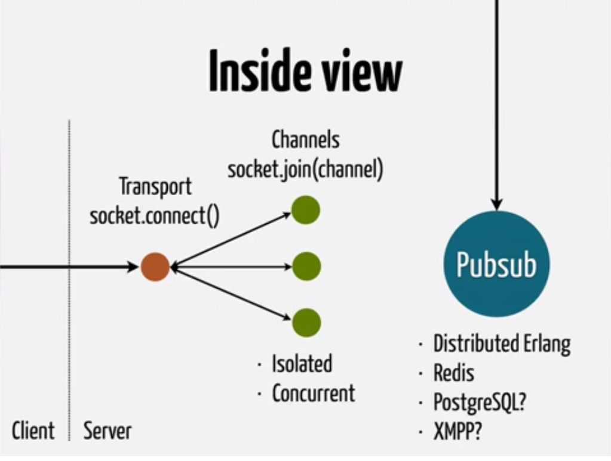

Elixir Phoenix Development
What is new in that?
Isn't that’s similar to Node or EM Websocket Ruby?
The difference is about scaling!
● The clock speed of newer CPUs are not getting faster
instead they having multiple cores.
● Ruby and Node both are not able to utilize the
resources in a way these are utilized by Elixir.
● As we have seen the WhatsApp case we know the
Elixir can scale vertically and it scales very well.
So what happens if we can not further scale vertically?

We start scaling it horizontally
● If a single powerful machine is not capable, we can simply turn on another
machine and tell this new machine how to find other machines.
● Erlang is distributed so is Elixir as the system is designed around message
passing, the Erlang VM abstracts the message passing in a such a way
that it doesn’t matter if the recipient of the message is in the same
machine or in another node in the same network.
Scaling vertically by adding more powerful hardware was a thing of the past. We scaled horizontally, by adding more commodity hardware. With the coming of age of mega-core architectures, we have the choice of either adding more hardware or more cores, or both. Erlang style concurrency puts Elixir/Phoenix ahead of the game when it comes to scaling with both approaches.

Whenever a socket is initiated a new process is
created to handle it. Don’t worry the are Erlang virtual
machine processes not operating system processes.
● And for every channel that is created within this
channel separate processes are created.
● Erlang VM processes are very isolated that means a
buggy or faulty channel will not affect any other thing
in the system.
● All the processes are concurrent so none of the
process is going to block anything in the system.
EMAIL US AT
elixir_development@techracers.com